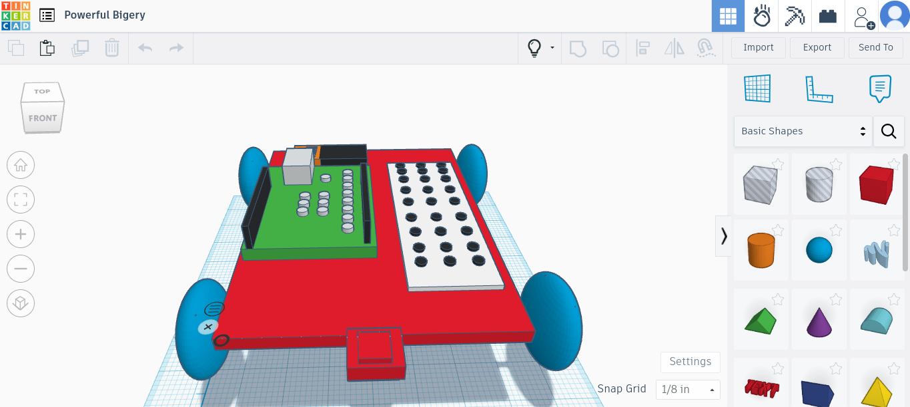

You Seek My Weekly Updates They are Yours

WEEK 1 8/20/23 - In the beginning, there was no website, then through hard work and dedication, and the help of a mentor and other supportive groupmates, a website was conceived. Shortly after thy great creation had settled the architects participated in a team-building activity. The activity consisted of strategically getting a spherically shaped marble to be transported to a minuscule bucket via a system of rods.Thy group had to work together to reach the completion of the common goal at hand. Alas, neither team was able to bask in the light of victory and though they walked away smiling, it was all a facade for the shame inside.
WEEK 3 8/21/23 - Production on a brand new project began. The rube goldberg machine would prove to be a difficult feat to achieve with the given time constraints. However a team as smart as mine had never got the chance to prove their engineering prowess. Production continues as the first ramp begins to take shape. The group unfortunately was split up and I, Enzo Zakari, was left with the energy depleting task of tinkering a cad.
WEEK 4 9/5/23 - With many hardships and delays the group was rushed and had to double production speed on their Rube Golderg Machine. Many moments passed as peers in their vicinity completed there challenge with relative ease. However the story would be different for group 2. The group was ambitious, determined, and most importantly resilient. Then, a vision, not realized by any man woman or child before, had been fulfilled. A meticulassly hand crafted mater piece of a rube gold berg machine was constructed with features including a stunning ramp with a 90 degree turn into an inginious pulley system that released a car with a needle not any thicker than a hair barreling towards a balloon down another ramp pitched at around 50 degrees. After 19 heavily calculated tests the small car hit its mark and popped the balloon. The sound rippled through the room like a wave of triumph soon after a glorious celebration followed as the grouped 2 basked in the spotlight of success and victory.
WEEK 5 9/18/23 - Not too long after the grand success of the rube goldberg machine the group was once again tasked with a challenge. This time an individual dilemma was to be tackled. A tough ask was given, a paper flotation device, looming in the horizon like a storm destin to ravage a town. With a moments notice I got to work. I stared with curiosity at the others as they were perfecting their intricate designs. I kept my design simple, only folding up the sides and putting only one weight in the center. It was only after the contest where I realized more weight could be added, and the flotation device champion could have been me. I lasted all five minutes during the competition and though I did not win, I was still able to leave with pride for my design. Thursday of that week after an informative presentation about computer engineering us pupils were assinged the unrelated challenge of designing and measuring the letter E out of paper.
WEEk 6 9/25/23 - As class began on september 18 and the students took their seats another grand week of education was upon them. This time the lesson called for a detailed description of computer engineering once again, and the many intricate components of a computer. After a well thought out lesson, computers were given to each group with the task of disassembling and reassembling all the components inside. We hastily got to work. Each time a piece was to be removed the precise location from its origin would be filmed for future reference. This strategy would work until it would be revealed that tbe footage was not clear enough. Eventually through a grueling process of memorization and undescripitive videos the internals of the pc came to fruition and the puzzle was solved.
Week 7. The new week brought new opportunities with new chances to understand previously unfamiliar topics. What this new week bought would be bioengineering, a concept quite difficult to grasp and very incrticate when it comes to the projects involved. Our group was tasked with creating a prosthetic arm out of nothing more than cardboard, string and tape. The shape of the arm began to display itself, the lanky, flimsy structure of the fingers to the long but firm arm. Using tape we attached string to the tips of the fingers and tied the other end into a loop big enough to fit fingers through. Then we put an arm restrained at the forearm and elbow so that the prosthetic with securly fit on someones arm. The controls were very simple, all you had to do to move the fingers was pull the strings.
Week 8. The sun shined brightly over the sky in the new week and now aerospace engineering was the subject matter. Aerospace is commonly used in the creation of airplanes and rockets. A new project would be assigned, a bottle rocket. The class was forced to get out of their comfort zone work with a new partner to construct an aerodynamic design to apply to a typical two liter soda bottle. After tinker cadding our designs, my partner and I began to appy our digital rendition to the physical bottle. We created rather flimsy design,but we had faith.
Week 9. On thursday of the next week, our rockets were launched. After what seemed like hours I attached our rocket to the launcher with a racing heart. Using water pressure our rocket was propelled forward in the blink of an eye. Unfortunately the rocket spiraled straight into the air before plummiting down and hitting the ground hard. Even though we got last place the rocket stayed intact after impact.
Week 10. As a brand new week rolled around environmental engineering would consume the class. We would learn about hazard levels, different kinds of pollutions, water treatment and start a new project. Though only a one day endeavor, we would create a water filter using natural materials. We began by filling a soda bottle acting as a funnel for the filter with cotton balls, then we added sand on top of that, pebbles after, and finally on to we added rocks. The purpose of this intricacy was to strain out the particles from the dirty water. Our filter was able to remove a lot of debris, but would end not a yellowish color that had visible particles. If we redid the expeiriement we would have removed the debris caught by the filter.
S2 Week 1. We began with a fresh start in semester two by making up work from last semester due to the cyber attcks. Despite the hardships we were eager to continue learning. The first topic we would learn about would be chemical engineering. We would learn about the different fields of chemicl engineering and the various processes done within these fields. To test our knowlage we made obleck, a non-Newtonian fluid that is liquid when untouched, but becomes solid when interacted with.
S2 Week 2 We had to make project proposal for the new project, the arduino car. Solomon and I had to fill out the budget, design, build of materials and milestones for our arduino car. We also had to wright a shor biography about ourselves. We researched the code.
S2 Week 3. Solomon and I have made a lot of progress on our arduino car design. We completed our tinkercad and worked on our circuit board. The circuit board was quite intricate and difficult to complete. Luckily, we completed most of it, and we hope to complete it this week and start assembling the car.
 S2 Week 4. Solomon and I completed the code for the wheels and began building the body of the arduino car. We struggled quite a bit on the wheels as they kept breaking and we h to sauter them multiple times. However our code did work and the wheels did turn.
S2 Week 5. Progress on our arduino car is finally moving along. We already added the code and built the car. We still have to test the car. Also, the whells have been giving us some trouble when it comes to working. However, overall we are at a good pace to finishing within the next week.